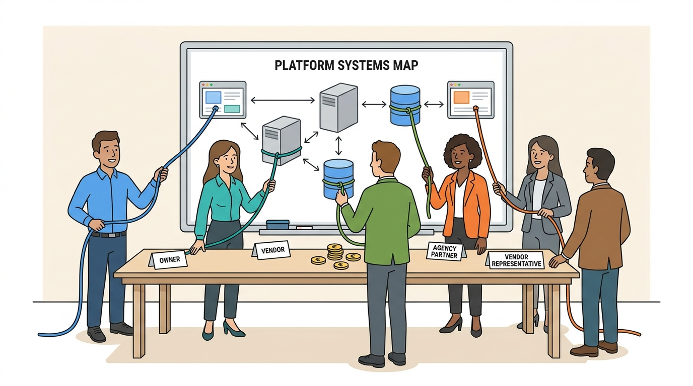

Part X — EVOLUTION: Decisions That Change With Scale
Who Builds and Who Owns: Teams, Vendors, Agencies and Governance
AI-assisted: researched and written with Claude Code and Codex; illustrations generated with Gemini and OpenAI image tools. How this works
